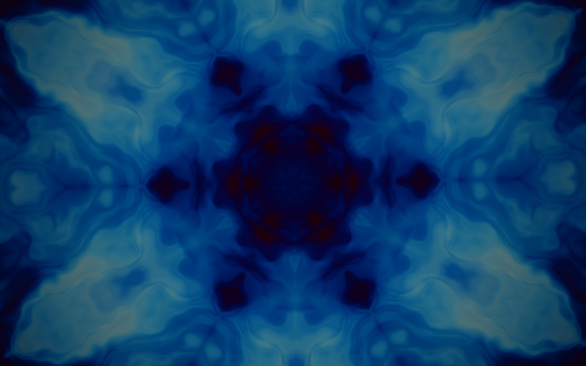

Sound for when silence won’t do.
Drones, rain, bells and a wordless choir, synthesized as you listen and never the same twice, plus fifteen full-screen visual scenes. For meditating with a busy mind, and for deep work.
One click starts the sound you used yesterday.
Meditate and Focus each remember their own sound, length and beat. Most days there is nothing to decide.
Meditate
It changes slowly and never becomes a tune you’d follow, which gives your attention somewhere to land while the mantra does the work. When the timer ends you get one bell and a couple of minutes of low hum, then a slow fade to silence.
Focus
Brown noise, rain, waves or a steady drone, for as long as you work. You can add work blocks with short breaks, and have it turn down whenever a microphone is in use, as on a call.
Ten layers, all built from oscillators and noise.
Each of the twelve built-in sounds uses a few of them. Add or remove any layer, or leave the mix as it is.
Fifteen scenes that slowly melt into one another.
When you want them, they open in their own window, full screen if you like. Every frame is drawn as you watch, and the colors cycle slowly through each palette. There are mandalas, a tunnel, tilings, fractals, and a harmonograph that traces the drone’s chord. They follow the sound as closely as you like, and the light dims when you wind down.

The picture is slow, shifting color, and its overall brightness never changes faster than three times a second. If you have photosensitive epilepsy, or patterns of light have ever made you unwell, skip this.
The live visuals need WebGL, which this browser can’t run.
- Follow the soundThe shapes swell with the drone, bells bloom into light, and a new note shifts the colors. A slider sets how much. The beat never reaches the picture.
- DriftLeft alone, it moves to the next scene every 80 seconds (30 in this demo), melting into it over nine.
- Breath pacerA ring that grows as you breathe in and shrinks as you breathe out, at 5.5 breaths a minute.
- Calm visualsSlower, dimmer and paler. The app starts with it on; this demo starts with it off unless your system asks for reduced motion.
- EmberA dim, warm glow that slowly brightens and fades, for sitting with your eyes closed. Drift never moves you off it; press E to go there.
Drag one point to change the whole sound.
Left is warmer, right is brighter, up wanders more and down holds still. The center is the sound as made. About seventy finer settings sit behind it if you want them.
- 1A one-line hint for every controlHover over a control, or tab to it, and a plain sentence under the sound’s name says what it does.
- 2More like thisMoves every fine setting a little at random, for a close variation on what’s playing.
- 3Keep as my soundGive it a name and it’s listed under Yours, ready next time.
Optional beats, and a plain account of the evidence.
A binaural beat is a pulse your brain creates when each ear hears a slightly different tone. Tonewell names its beats by what people commonly use them for (Settle, Theta, Deep rest, Calm focus, Alert work) and says plainly that these are not proven effects. ⌘B turns the beat on or off.
Learn, inside the app, has nine short articles on beats, meditation, focus and safety. Each lists its sources, including studies that found no effect.
Built to run while your eyes are closed.
Download Tonewell
Beta, version 0.1.0. Free and open source under the MIT license.
Also for Linux, untested: AppImage or .deb.
Tonewell keeps itself up to date. New versions download in the background and install when you quit, never during a session.
Headphones recommended. Binaural beats need them; everything else works on speakers.